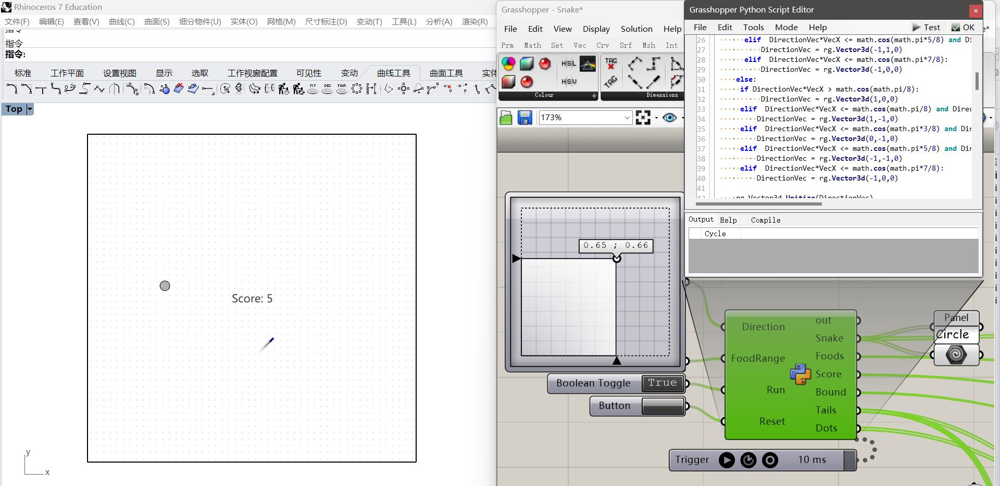

ETH MAS dfab | Zac Zhuo Zhang
Contents
LINK https://wiki.mcneel.com/rhino/home/essentialmathematics
LINK https://developer.rhino3d.com/guides/general/essential-mathematics/
BOOK https://www.rhino3d.com/download/rhino/6/essentialmathematics
⚪◯◯◯◯
// In GH C#, unit vector can be assigned in this way:
Vector3d a = new Vector3d ();
a = Vector3d.XAxis;
a = Vector3d.YAxis;
a = Vector3d.ZAxis;
// In addition, zero vector is in this way:
a = Vector3d.Zero;

// In Csharp, it is like:
Vector3d a,b;
c= a*b; //Dot Production;
c=a×b; //Cross Production;
Vector Mathematics: https://developer.rhino3d.com/guides/general/essential-mathematics/vector-mathematics/#15-tutorials
Parametric Curves and Surfaces: https://developer.rhino3d.com/guides/general/essential-mathematics/parametric-curves-surfaces/#31-parametric-curves
Hermite and Bézier curves are two examples of cubic polynomial curves that are determined by four parameters. A Hermite curve is determined by two end points and two tangent vectors at these points, while a Bézier curve is defined by four points. While they differ mathematically, they share similar characteristics and limitations.
Curve degree is a whole positive number. Rhino allows working with any degree curve starting with 1. Degrees 1, 2, 3, and 5 are the most useful but the degrees 4 and those above 5 are not used much in the real world.
LINK https://product.hubspot.com/blog/git-and-github-tutorial-for-beginners
⚪⚪⚪⚪◯
A quick aside: git and GitHub are not the same thing. Git is an open-source, version control tool created in 2005 by developers working on the Linux operating system; GitHub is a company founded in 2008 that makes tools which integrate with git.
You do not need GitHub to use git, but you cannot use GitHub without using git.
If you leave a clear explanation of your changes it can be extremely helpful for future programmers (perhaps future you.
‘A branch in Git is simply a lightweight movable pointer to one of these commits.’
By default, every git repository’s first branch is named master (and is typically used as the primary branch in the project).
As part of the tech industry’s general anti-racism work, some groups have begun to use alternate names for the default branch (we are using primary in this tutorial, for example).
A pull request (or PR) is a way to alert a repo's owners that you want to make some changes to their code. It allows them to review the code and make sure it looks good before putting your changes on the primary branch.
Learn the concept of Branch System of Git: https://learngitbranching.js.org/?locale=zh_CN or https://git-school.github.io/visualizing-git .
Additional, using git with VSCode: https://youtu.be/i_23KUAEtUM .
LINK https://www.modelab.is/grasshopper-primer
⚪◯◯◯◯
Follow these tutorials of 3a and 3b:
LINK https://vimeopro.com/rhino/grasshopper-getting-started-by-david-rutten/video/79844992
LINK https://gramaziokohler.github.io/teaching_materials/grasshopper
⚪◯◯◯◯
LINK https://developer.rhino3d.com/guides/rhinopython/
⚪⚪⚪◯◯
Python is sometimes called a scripting language or a glue language. This means python is used often to run a series of commands as a script or used to create links between two other technologies as a glue.
Rhino uses Python version 2.7. To be more specific Rhino uses IronPython which brings together the Python language and Microsoft’s .NET framework.
LINK (Python Basic Syntax) https://developer.rhino3d.com/guides/rhinopython/python-statements/
In general, the lack of a required statement termination character simplifies script writing in Python.
You cannot split a statement into multiple lines in Python by pressing . Instead, use the backslash () to indicate that a statement is continued on the next line.
Sometimes, more than one statement may be put on a single line. In Python a semicolon ( ; ) can be used to separate multiple statements on the same line. For instance three statements can be written:
y = 3; x = 5; print(x+y)
#Above is the same as below.
y = 3
x = 5
print(x+y)
LINK (Style Guide for Python Code) https://peps.python.org/pep-0008/
LINK https://developer.rhino3d.com/guides/rhinopython/what-is-rhinopython/
LINK https://gramaziokohler.github.io/teaching_materials/python/
LINK https://developer.rhino3d.com/guides/rhinopython/ghpython-component
LINK https://developer.rhino3d.com/guides/rhinopython/your-first-python-script-in-grasshopper
LINK (Additional Video tutorials by McNeel) https://youtu.be/l4_vIRtRUaU / https://youtu.be/qSysanmDKtI / https://youtu.be/ZGIA-fBuCV8
LINK (Additional Video tutorials) https://youtu.be/Ln-ByMyfDy8
Changing the name of the inputs/outputs: case sensitive; must begin with a letter or _ .
The input/output in python component, do NOT add any SPACE since this will create errors(C# won't have the problem).
Type Hints: assigning types to inputs.
Import modules:
import math
print math.pi
print math.pow(2,2)
print 2**8
print (math.degrees(math.pi))
print (math.radians(math.pi))
import random
random_int = random.randint(10,20)
print random_int
random_float = random.uniform(10,20)
print random_float
first_num = num[0] #Get the first one
last_num = num[-1] #Get the last one
num[0] = 10 #Change the value of an item in the list
num.append(10) #Add an item
num.insert(a,b) #Insert an item b at No.a

sequence = range(1) #Crate a list [0]
sequence = range(5) #Crate a list from 0 to 4
sequence = range(3,7) #Crate a list from 3 to 6
oddSequence = range(1,10,2) #Crate a list [1,3,5,7,9] #range(start, stop, step)
print names[:2] #Print the items No1 to No2
print names[2:] #Print items No2 to the last
print names[1:3] #Print items No1 to No3
newNames = names[:] #Copy a list (NOT reference)
import ghpythonlib.treehelper as th
list_of_list = [names, nums, chars]
a = th.list_to_tree(list_of_list)
print len(myList) #Length of a list
print sum(myList) #Sum of all items of the num list
minNum = min(nums) #min of the num list
maxNum = max(nums) #max of the num list
names.pop(0) #Remove the first item of the list
names.remove("1") #Remove a specific item
names.reverse() #Reverse a list
names.sort() #Sort the list numerically or alphabetically
#Python uses indentation
# Example 1
for i in x:
print i
print "done!"
# Example 2
for i in x:
print i
print "done!"
#Below is like 'foreach loop' in C#
for i in list_num
print i
# Below is like 'for loop' in C#
for i in range(len(list_num))
print list_num[i]
import scriptcontext as sc
import rhinoscriptsyntax as rs
import random
import Rhino.Geometry as rg
import copy
import math
def UnitizePoint(point):
point = rg.Vector3d(point.X,point.Y,0)
rg.Vector3d.Unitize(point)
point = rg.Point3d(point.X,point.Y,0)
return point
def DirectionalMove (Direction):
DirectionVec = rg.Vector3d(Direction.X-0.5, Direction.Y-0.5,0)
rg.Vector3d.Unitize(DirectionVec)
VecX = rg.Vector3d.XAxis
if DirectionVec.Y >= 0:
if DirectionVec*VecX > math.cos(math.pi/8):
DirectionVec = rg.Vector3d(1,0,0)
elif DirectionVec*VecX <= math.cos(math.pi/8) and DirectionVec*VecX > math.cos(math.pi*3/8):
DirectionVec = rg.Vector3d(1,1,0)
elif DirectionVec*VecX <= math.cos(math.pi*3/8) and DirectionVec*VecX > math.cos(math.pi*5/8):
DirectionVec = rg.Vector3d(0,1,0)
elif DirectionVec*VecX <= math.cos(math.pi*5/8) and DirectionVec*VecX > math.cos(math.pi*7/8):
DirectionVec = rg.Vector3d(-1,1,0)
elif DirectionVec*VecX <= math.cos(math.pi*7/8):
DirectionVec = rg.Vector3d(-1,0,0)
else:
if DirectionVec*VecX > math.cos(math.pi/8):
DirectionVec = rg.Vector3d(1,0,0)
elif DirectionVec*VecX <= math.cos(math.pi/8) and DirectionVec*VecX > math.cos(math.pi*3/8):
DirectionVec = rg.Vector3d(1,-1,0)
elif DirectionVec*VecX <= math.cos(math.pi*3/8) and DirectionVec*VecX > math.cos(math.pi*5/8):
DirectionVec = rg.Vector3d(0,-1,0)
elif DirectionVec*VecX <= math.cos(math.pi*5/8) and DirectionVec*VecX > math.cos(math.pi*7/8):
DirectionVec = rg.Vector3d(-1,-1,0)
elif DirectionVec*VecX <= math.cos(math.pi*7/8):
DirectionVec = rg.Vector3d(-1,0,0)
rg.Vector3d.Unitize(DirectionVec)
return DirectionVec
scale = 0.03
tailLength = 20
dotRange = 50
Direction = DirectionalMove(Direction)
snakeCircles = []
tailCircles = []
dots = []
# Add the variables to the sticky dict
if "snakeLocations" not in sc.sticky:
sc.sticky["snakeLocations"] = []
sc.sticky["snakeLocations"].append(rg.Point3d(0,0,0))
if "foodLocation" not in sc.sticky:
sc.sticky["foodLocation"] = rg.Point3d(0,0,0)
if "score" not in sc.sticky:
sc.sticky["score"] = 0
if "Tails" not in sc.sticky:
sc.sticky["Tails"] = []
#Die
if sc.sticky["snakeLocations"][0].X > FoodRange or sc.sticky["snakeLocations"][0].X < -FoodRange or sc.sticky["snakeLocations"][0].Y > FoodRange or sc.sticky["snakeLocations"][0].Y < -FoodRange:
Run = False
# Run
if Reset:
sc.sticky["score"] = 0
sc.sticky["snakeLocations"] = []
sc.sticky["Tails"] = []
sc.sticky["snakeLocations"].append(rg.Point3d(0,0,0))
random.seed(1)
sc.sticky["foodLocation"] = rg.Point3d(random.uniform(-FoodRange,FoodRange),random.uniform(-FoodRange,FoodRange),0)
elif not Run:
print 'NOT Running'
else:
#With trigger
if len(sc.sticky["snakeLocations"]) <= 1:
sc.sticky["snakeLocations"][0].X += Direction.X
sc.sticky["snakeLocations"][0].Y += Direction.Y
else:
tempSnake = copy.deepcopy(sc.sticky["snakeLocations"])
for i in range(len(sc.sticky["snakeLocations"])):
sc.sticky["snakeLocations"][i].X = tempSnake[i-1].X
sc.sticky["snakeLocations"][i].Y = tempSnake[i-1].Y
sc.sticky["Tails"].append(copy.deepcopy(sc.sticky["snakeLocations"][0]))
if len(sc.sticky["Tails"]) >= tailLength:
sc.sticky["Tails"].pop(0)
sc.sticky["snakeLocations"][0].X = sc.sticky["snakeLocations"][1].X+Direction.X
sc.sticky["snakeLocations"][0].Y = sc.sticky["snakeLocations"][1].Y+Direction.Y
if rg.Point3d.DistanceTo(sc.sticky["snakeLocations"][0], sc.sticky["foodLocation"]) < scale*FoodRange :
sc.sticky["score"] += 1
sc.sticky["snakeLocations"].append(rg.Point3d(sc.sticky["snakeLocations"][-1].X-Direction.X,sc.sticky["snakeLocations"][-1].Y-Direction.Y,0))
sc.sticky["foodLocation"] = rg.Point3d(random.uniform(-FoodRange,FoodRange),random.uniform(-FoodRange,FoodRange),0)
# Return value
for snakeLocations in sc.sticky["snakeLocations"]:
snakeCircles.append(rg.Circle(rg.Plane(snakeLocations,rg.Vector3d.ZAxis), 1))
Score = 'Score: ' + str(sc.sticky["score"])
Snake = snakeCircles
Foods = rg.Circle(rg.Plane(sc.sticky["foodLocation"],rg.Vector3d.ZAxis), scale*FoodRange)
Bound = rg.Rectangle3d(rg.Plane(rg.Point3d(-FoodRange,-FoodRange,0),rg.Vector3d.ZAxis),2*FoodRange,2*FoodRange)
for Tails in sc.sticky["Tails"]:
tailCircles.append(rg.Circle(rg.Plane(Tails,rg.Vector3d.ZAxis), 1))
Tails = tailCircles
for i in range(dotRange):
for j in range(dotRange):
dots.append(rg.Point3d(FoodRange/dotRange+i*(2*FoodRange/dotRange)-FoodRange, FoodRange/dotRange+j*(2*FoodRange/dotRange)-FoodRange, 0))
Dots = dots


--- Growing, Growing, Brighter Everyday ! ---